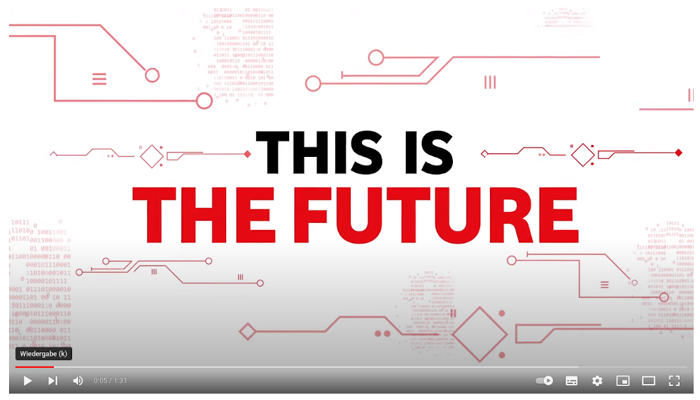
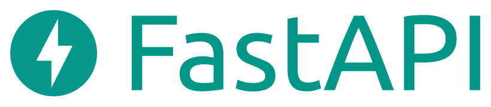

A description
echter start, titel usw.
Abstract
Netzbetrieb und Netzplanung stecken bei Versorgungsunternehmen wie der Vodafone ganz tief im Kern der internen Sytemwelt - Gegenstand existentieller Prozesse und historisch tief verstrickt in Ablauf- und Aufbauorganisation.
Wir berichten von der Integration der bestehenden GIS- und Dokumentationssystemen durch eine schlanke, cloud-native full stack open source Anwendung für die Planung neuer Netzbestandteile, die alte Zöpfe nicht abschneidet, sondern zu einem e2e-prozess verbindet.
Roadmap surprise
- Ausgangslage
- Anwendung: Gebietsauswahl
- Bausteine & Highlights
- Take-Away: Team, Komponenten & Vorgehen
Ausgangslage
- Neue Prozesse für neue Themen, sonst bestimmt Tooling die Herangehensweise
- Bestandssysteme und deren Abhängigkeiten
- wenn Themen wichtig & dringend: neues Tool
- Leitfrage: Wie bauen wir jenes Tool, so dass es mit dem — und nicht gegen den — Bestand arbeitet
Vodafone Tech 2025

Ausgangslage
- Inhaltliche Fragestellung ist seitens Vodafone gegeben
- Schwerpunkt daher in flexibler technologischer Umsetzung
- Den konkreten Use-Case der Vodafone werden wir daher nicht thematisieren
Anwendung: Gebietsauswahl
- Fiktives Szenario: Wir planen politischen Haustürvertrieb
- Ziel: Lauflisten und angepasstest Marketingmaterial für Wahlkämpfer
- Was haben wir: Adress- und Gebäudebestand, Demographie, statistische Aussagen zu Demographie und Wahlverhalten
- Wir suchen Wechselwähler
Bausteine & Highlights
- Frontend Framework
- Mapping Library
- UI Framework
- Backend / API Framework
- Databases
- Authentication
- ETL (Python und Apache Airflow)
Take-Away
- foo
Ausblick
- Kommende Monate sicherlich neue Anforderungen, wir sind gerüstet, auch dank OSS
- Menschen haben gelernt
- Investion in Know-How, Prozesse und Zusammenarbeit
- Bauhütten-Prinzip
Impressum
Matthias Daues & Marc Jansen